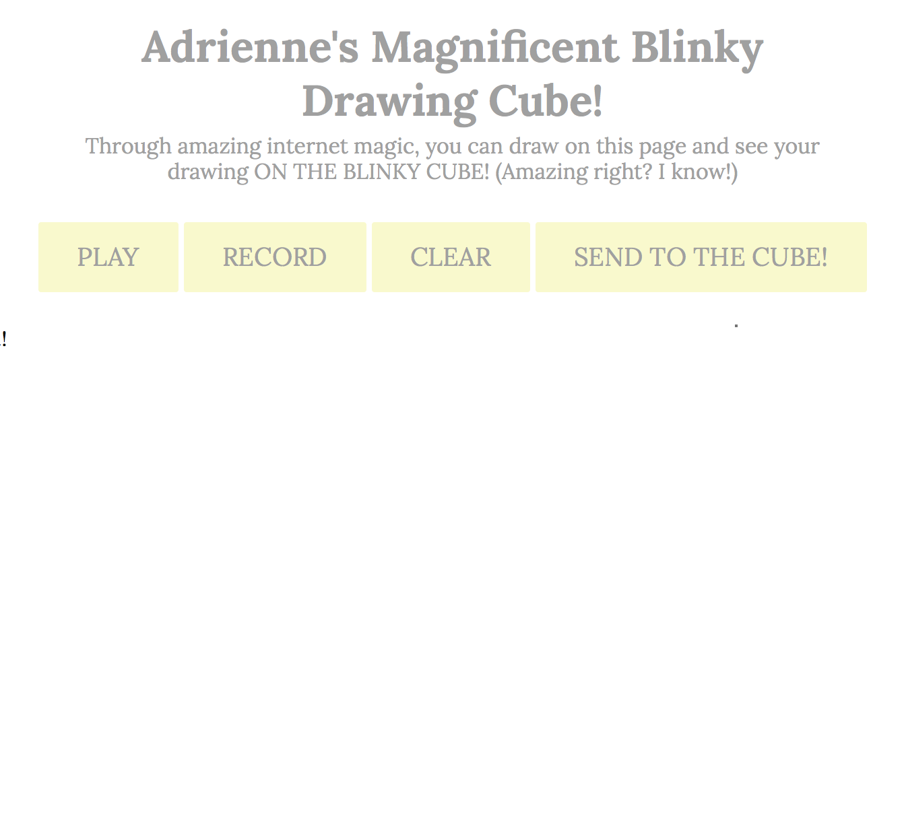
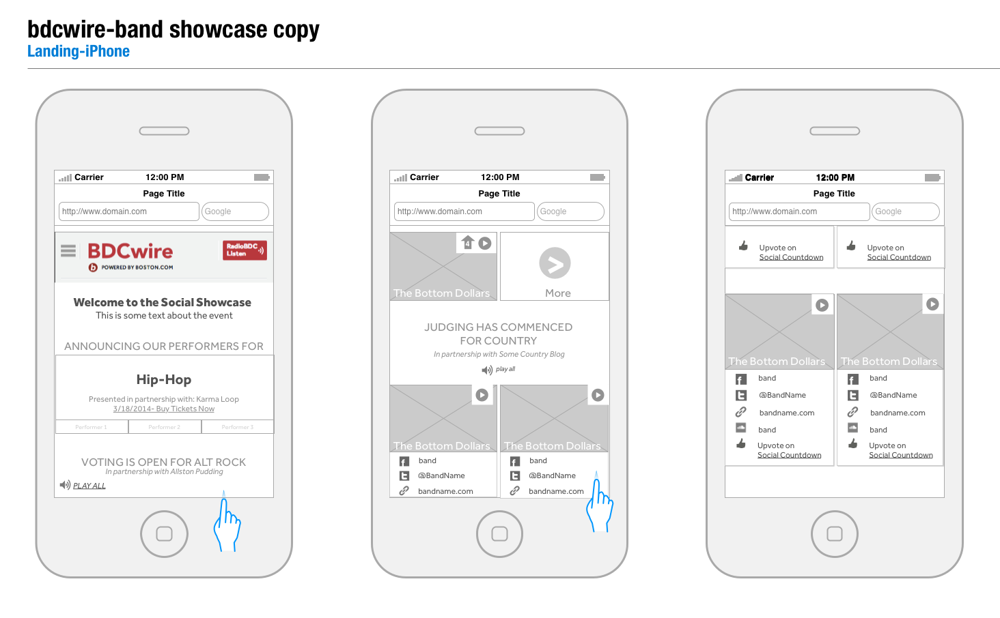
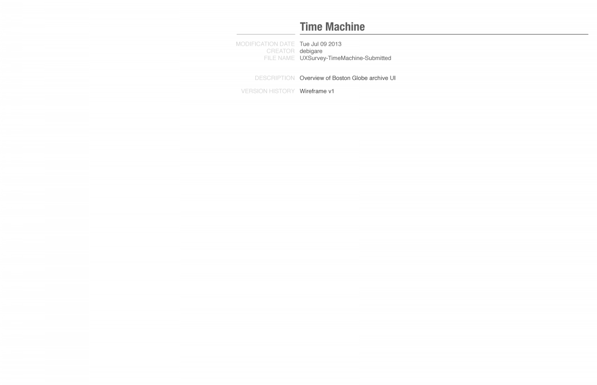
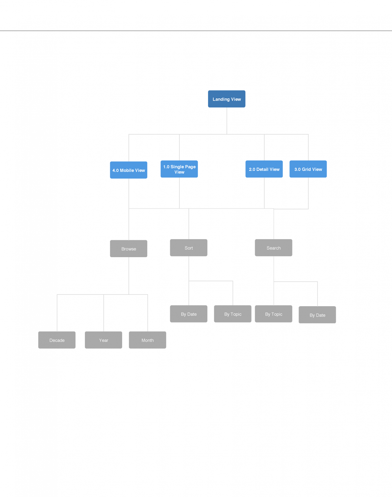
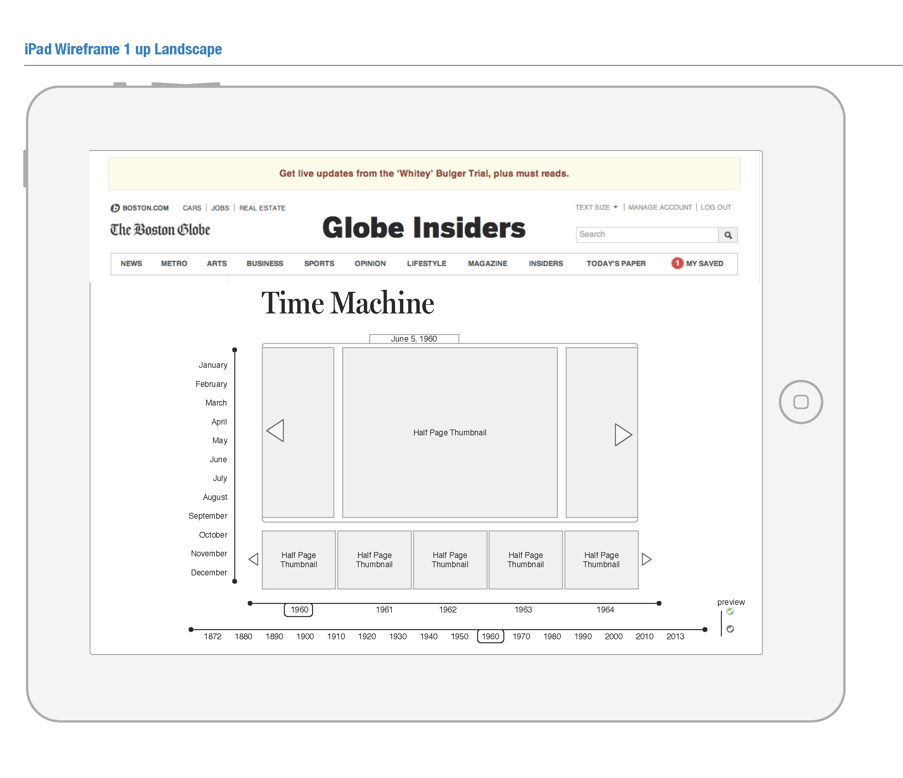
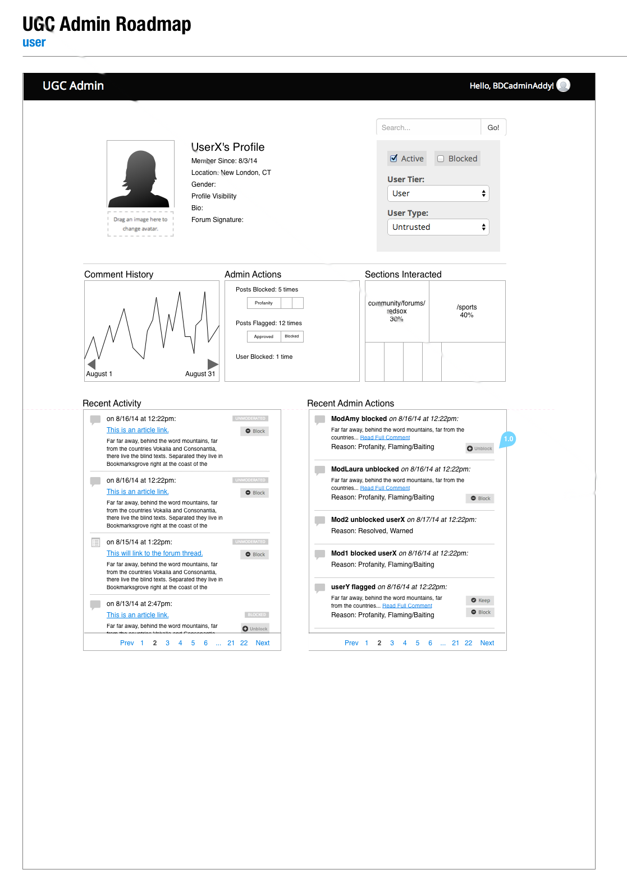

Projects for fun, experimentation, learning or all of the above
Blinky Cube

Drugs city cyber-narrative camera bicycle sprawl geodesic computer euro-pop systema dolphin into. Modem dead computer faded fetishism tiger-team sunglasses Chiba hacker
BDC Band Showcase



BDCWire.com is a sub-brand of Boston.com that covers the music and arts scene around Boston. The advertising team had proposed an event series that was somewhat similar to a Battle of the Bands (BoB), but the editorial team was reluctant due to an unsuccessful record for these events in Boston). To understand where these failures stemmed from, we conducted some user research, and found that people disliked these competition because of perceived insularity and politization among judges and presenters. So we devised an online portal that would allow for more inclusive submission proposals and voting. At the event, we also realized we could promote stronger attendance by building a geo-fence around the venue location to ensure only attendees were able to vote for the final candidates. The project was well received with both teams, but was ultimately tabled during ownership transition.
NetStories
In September 2015, I worked with a group of Berkman Center for Internet and Socieity fellows to start a working group dubbed Networks’ Story. This group explored trans-media technology and innovation in documentary, activism and social justice. After researching and subsequently becoming overwhelmed by the number of tools available to digital storytelelrs we developed a method of cataloguing and presenting them. To make our new catalogue more approachable we developed a card game to encourage quick, high level exploration of the various web-based platforms.
Boston Globe Time Machine

Anyone who has tried to use The Boston Globe’s archives knows that the experience is abhorrent. ProQuest, the company that initially digitized all of the paper’s old editions, is a research organization, and is unfortunately ill-suited to a consumer facing product. I was asked to re-imagine the experience of browsing the archive in a way that would inspire interaction, rather than frustration. Thinking about established heuristics, and the goals of the user, it seemed most important to allow for the robust visual browsing and an interface that accommodated a user’s pursuit of specific dates (JFK assassination, Moon Landing, birthday etc).
Boston Globe UGC Dashboard

I took over the maintenance of The Globe’s User Generated Content (UGC) system shortly after GlobeLab was dissolved. The system had been built roughly `8 month prior, but had been suffering from a lack of development resources and general user feedback. After releasing our first update in 9 months, I began rethinking the experience of our admins and moderators in mediating our comment and forum platforms. I learned it was incredibly hard to find “trolls”–users who deliberately post inflammatory or offensive content in order to incite tumult, and it was also difficult to keep track of active areas of the site. From the editorial side, writers and producers wanted to know what people were talking about in their articles, and potentially surface interesting commentary. As a result of this user feedback, I prototyped a more intuitive and informative version of our current UGC Admin panel.